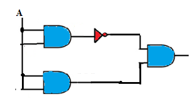
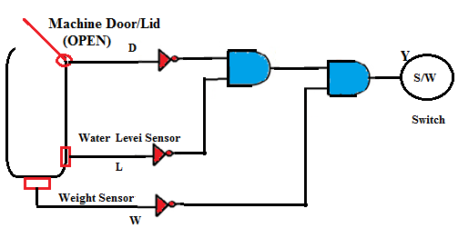

Q1. For the washing machine simulated in this experiment, what is the status of the Heater when the door is open, level is high and temperature is low?
A
Heater turns ON
B
Heater turns OFF
C
Heater burns
D
None of these
Ans is B
Q2. For the circuit shown below the output is:

A
0
B
1
C
A
D
A'
Ans is A
Q3. Consider the concept diagram of another washing machine given below. The Boolean expression for Y is:

A
Y = D’ + L’ + W’
B
Y = (D + L + W)
C
Y = D’ . L’. W’
D
Y = (D. L. W)’
Ans is C
Q4. For the washing machine in Q.3, if any or all the sensor outputs is 1, then the final output to the switch is:
A
0
B
1
Ans is A
If the door/lid of washing machine is open or water level is below the minimum level or washing machine is overloaded, the main switch should be turned
A
OFF
B
ON
Ans is A